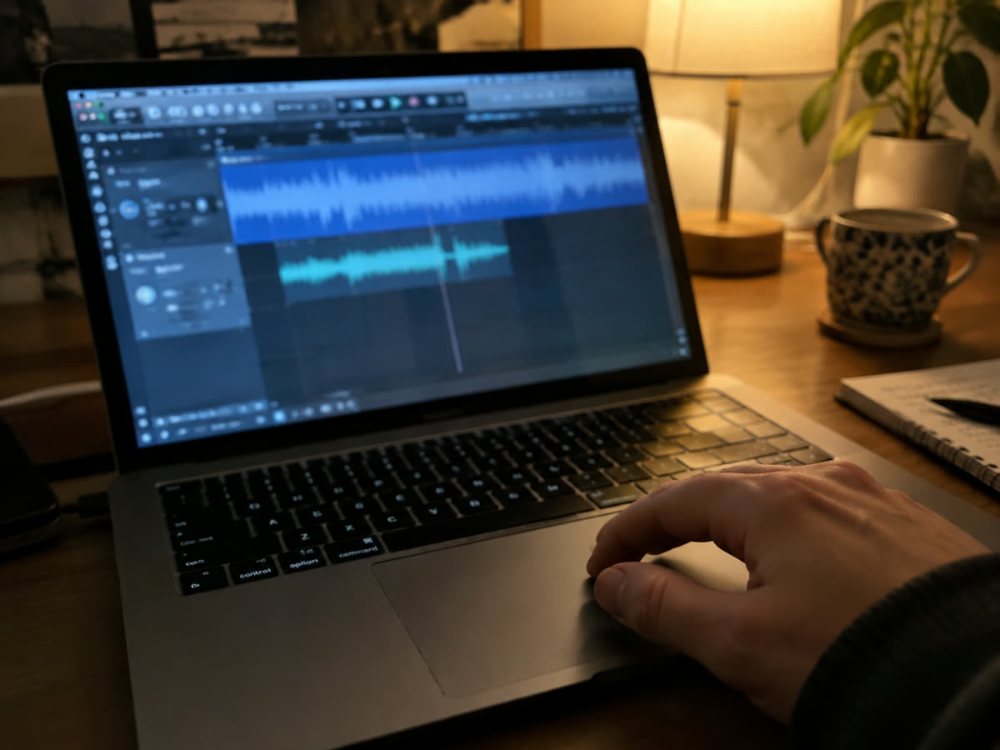

Musik in Reels: was erlaubt ist und was nicht
Musik trägt ein Reel. Sie ist zugleich der Bereich, in dem Betriebe am schnellsten in Schwierigkeiten geraten.
Musik trägt ein Reel. Sie gibt Tempo vor, überspielt holprige Schnitte und entscheidet mit, ob jemand dranbleibt. Gleichzeitig ist sie der Bereich, in dem Betriebe am schnellsten in rechtliche Schwierigkeiten geraten, meist ohne es zu merken. Der Unterschied zwischen erlaubt und nicht erlaubt ist unscheinbar, aber eindeutig.
Dieser Text ist eine Orientierung aus der Praxis und keine Rechtsberatung. Bei größeren Vorhaben fragen Sie bitte jemanden, der dafür ausgebildet ist.
Der entscheidende Unterschied: privat oder geschäftlich
Instagram und TikTok haben große Musikbibliotheken, und in der App sieht alles gleich aus. Der Haken liegt in den Nutzungsbedingungen: Die bekannten Titel aus den Charts sind für private Konten lizenziert, nicht für geschäftliche.
Sobald Ihr Profil ein Geschäftskonto ist, und das sollte es sein, sehen Sie in der App eine deutlich kleinere Auswahl. Das ist kein Fehler, sondern genau diese Unterscheidung. Was Ihnen dort angeboten wird, ist für gewerbliche Nutzung freigegeben.
Die Versuchung, das Konto deshalb privat zu lassen, ist groß. Davon ist abzuraten: Sie verlieren Statistiken, Kontaktschaltflächen und Planungsfunktionen, und Sie nutzen die Musik trotzdem nicht rechtmäßig, weil das Konto faktisch gewerblich ist.
Was passiert, wenn man es falsch macht
Im harmlosen Fall erkennt die Plattform den Titel und schaltet den Ton stumm oder sperrt das Video in bestimmten Ländern. Ärgerlich, aber folgenlos.
Im unangenehmen Fall meldet sich ein Rechteinhaber. In Deutschland kann daraus eine Abmahnung mit Unterlassungserklärung und Kosten werden. Das betrifft eher selten einzelne Reels kleiner Betriebe, ausgeschlossen ist es aber nicht, und das Risiko steht in keinem Verhältnis zum Nutzen.
Dazu kommt ein Punkt, den viele übersehen: Wird ein Video wegen Musik entfernt, ist auch die Reichweite weg, die es erarbeitet hatte.

Die sicheren Wege
Der erste ist die gewerbliche Bibliothek in der App. Sie ist kleiner und enthält keine Chart-Titel, deckt aber die üblichen Stimmungen ab und ist ohne weiteres Zutun lizenziert.
Der zweite ist ein Abonnement bei einem Anbieter für lizenzfreie Musik. Für zwölf bis dreißig Euro im Monat bekommen Sie Titel samt Lizenz für gewerbliche Nutzung. Wichtig: Bewahren Sie die Lizenznachweise auf. Wer im Ernstfall belegen kann, woher ein Titel stammt, ist sehr schnell aus der Sache heraus.
Der dritte Weg wird am meisten unterschätzt: Originalton. Das Geräusch der Maschine, das Zischen in der Pfanne, der Hochdruckreiniger, Ihre eigene Stimme. Das ist rechtlich unproblematisch und wirkt bei handwerklicher Arbeit oft stärker als jeder Musikteppich, weil es echt klingt.
Und die Trends?
Ein Teil der Reichweite entsteht darüber, dass ein gerade beliebter Ton verwendet wird. Dieser Vorteil ist real, aber kleiner, als oft behauptet, und er gilt vor allem für Unterhaltungsinhalte.
Für einen lokalen Betrieb wiegt er die rechtliche Unsicherheit nicht auf. Wenn ein Ton in der gewerblichen Bibliothek verfügbar ist, nutzen Sie ihn gern. Wenn nicht, verzichten Sie darauf. Der Anfang des Videos entscheidet ohnehin mehr als der Ton, siehe Die ersten zwei Sekunden.
Bei den Videos, die wir im Rahmen einer Betreuung liefern, wird ausschließlich Musik verwendet, die für gewerbliche Nutzung freigegeben ist, und die Nachweise liegen bei uns. Was sonst zum Schnitt gehört, steht unter Schnitt.


Lernen wir uns kennen.
15 Minuten am Telefon oder per Video. Danach wissen Sie, ob und wie Social Media für Ihren Betrieb funktioniert.